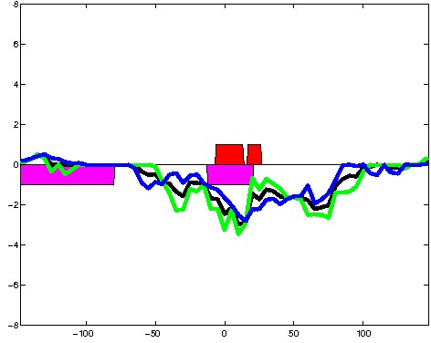

K562 Repressive DNase matched - State 20:ReprD (n=10)
K562 Repressive DNase matched - State 20:ReprD (n=10)
[
See group descriptions
]

; picked in K562 (state 20:ReprD, DNase); matched; chr1:29,639,649-29,639,943 (295bp)")
; picked in K562 (state 20:ReprD, DNase); matched; chr1:27,287,949-27,288,243 (295bp)")